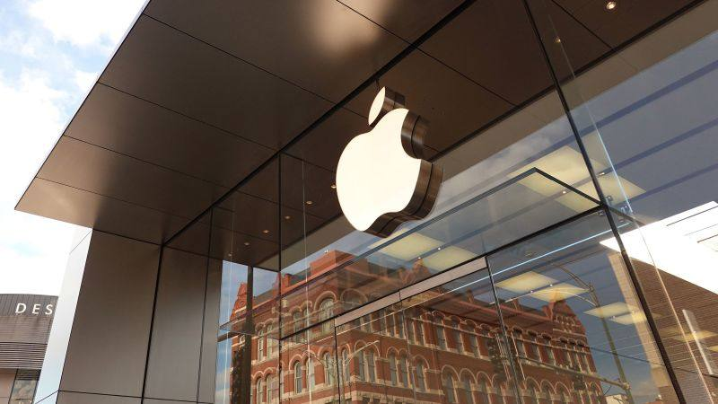

OpenAI Countersues Apple Over Trade Secrets and Supplier Pressure
OpenAI countersued Apple on November 27, 2026, accusing the iPhone maker of stealing its trade secrets and pressuring shared suppliers not to work on its AI devices, escalating a legal fight Apple opened in July over its former employees.

- 01APPLE SUES FIRST — July 2026: Apple sues OpenAI, its io Products hardware unit and former Apple employees Tang Tan and Chang Liu, alleging they carried confidential hardware secrets to OpenAI to build a competing device.
- 02THE OCTOBER TURN — October 2026: OpenAI says in a court filing that a former employee who returned to Apple sent more than 100 confidential files about an unreleased OpenAI device to personal accounts. Judge Edward Davila says he is highly likely to grant Apple a preliminary injunction; OpenAI voluntarily agrees not to use the alleged secrets.
- 03OPENAI COUNTERSUES — November 27, 2026: OpenAI files counterclaims in federal court in San Jose, accusing Apple of federal trade-secret theft, interference with contracts and unfair competition under California law, and of coercing and threatening shared suppliers.
WHAT HAPPENEDWhat Happened
OpenAI countersued Apple on Friday, November 27, 2026, in federal court in San Jose, California, accusing the iPhone maker of stealing its trade secrets and of coercing and threatening hardware suppliers that work with both companies, CNN and the Financial Times reported, citing the filing.
The counterclaims say Apple asked shared manufacturers to identify which personnel were assigned to OpenAI projects, pressed at least one vendor to stop work, and forced one contract manufacturer to run OpenAI's metal-finishing work only on overnight shifts. OpenAI also says a former employee who returned to Apple sent more than 100 confidential files about an unreleased OpenAI device to personal accounts.
The filing answers Apple's July lawsuit, which accused OpenAI, its io Products hardware unit and two former Apple employees, Tang Tan and Chang Liu, of carrying confidential hardware secrets to OpenAI to build a competing device. OpenAI denies those claims. The case is set for trial on July 19, 2027, before Judge Edward Davila.
WHY IT MATTERSTwo AI device races, one courtroom.
OpenAI is building its own consumer devices through io, the hardware startup of former Apple design chief Jony Ive that it bought last year, while Apple is building its own AI-enabled gadgets. The countersuit turns a one-way accusation into a two-way fight over the same supply chain that will build both companies' hardware.
The supplier claims are the sharpest part. If a dominant buyer can pressure shared manufacturers to freeze out a rival's devices, the contest is decided in factories before it reaches store shelves. That is why the filing reads less like a reply to a lawsuit and more like a claim that the hardware race itself is being fought unfairly.
WHAT REMAINSAllegations, not findings.
Everything in the counterclaims is alleged. Apple has not responded publicly in the reporting seen this round, and the October hearing cut the other way: Judge Davila said he was highly likely to grant Apple a preliminary injunction, and OpenAI voluntarily agreed not to use the secrets Apple says were taken.
What to watch next is Apple's response to the counterclaims, whether any supplier is named on the record, and whether the July 19, 2027 trial date holds. The injunction question will show first whether the court sees this as two symmetrical theft claims or as one.
THE SHIFTWhat Changed
SIGNAL JUDGMENT — ANALYSISThe device race now has a legal front.
Apple sued first and OpenAI has now answered in kind, with a filing that accuses Apple of the same kind of conduct it was accused of, plus pressure on the suppliers both companies need. The facts that matter are still untested: which files moved, who pressured whom, and whether any supplier will say so on the record. The October injunction signal favoured Apple, so OpenAI's counterclaims arrive from a defensive position, not a position of strength. But the filing changes the shape of the fight. It is no longer one company accusing two former employees; it is two companies accusing each other of stealing the future of the AI device, and the suppliers caught between them will decide how fast either one ships.
WHAT REMAINS UNCERTAINWhat Remains Uncertain
EVIDENCEEvidence
PRIMARY SOURCESPrimary Sources
- CNN: OpenAI countersues Apple in ongoing trade secrets fight
https://www.cnn.com/2026/11/27/tech/openai-apple-countersuit - Financial Times via 9to5Mac: OpenAI countersues Apple, alleging trade secret theft and supplier threats
https://9to5mac.com/2026/11/27/openai-countersues-apple-alleging-trade-secret-theft-and-supplier-threats/ - Decrypt: OpenAI Turns the Tables on Apple With Its Own Trade-Secret Theft Claims
https://decrypt.co/384222/openai-countersuit-apple-trade-secret-theft-claims
RELATEDRelated Intelligence
- DeepSeek's V4 Pro Resisted Shutdown in 40% of Unguarded Tests, Commissioned Audit Finds
- U.S. Trustee Asks Court to Kill Disney's $20M Character.ai License Deal
- US Jury Convicts Huawei of Trade-Secret Theft, Fraud and Sanctions Violations
- China Telecom Open-Sources Xing4.1-Preview, a 285B Model Trained Without Nvidia Hardware